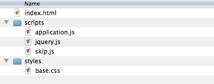

Reading the webcam
The best way to start talking about HTML5 methods for reading data from a webcam is to just dive into our webcamTemplate.zip. Because WebRTC video is so new browser compatibility may be an issue for you. Might I recommend Chrome?

Open up scripts/application.js in your text editor
because that’s where the goods are.
Like some of our previous templates it must run from an HTTP server
(rather than straight off your desktop).
This is again due to browser security—overall a good thing.
Rather than use AppEngine to create an HTTP server, I thought we'd
try this command-line method with smaller overhead:
Macintosh
- Open your Terminal application.
- Type
cd(which stands for “change directory”) and leave a space after it, but do not hit enter. - In Finder navigate to the folder where you've stored this template.
- Drag and drop the folder into Terminal. You will see the pathname of the Finder folder appear in Terminal.
- Hit enter in Terminal.
- Type
python -m SimpleHTTPServerand hit enter. This will start a light HTTP server on the default port, 8000. - Now you can visit the URL http://localhost:8000 in your browser!
- To quit the server go back to Terminal where the server is running and hit Control+C.
Windows
Similar to above, but you'll have some Windows-specific trix to juggle.